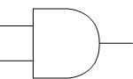

AND Gate
Output is 1 only when both inputs are 1.
| A | B | Q |
|---|---|---|
| 0 | 0 | 0 |
| 0 | 1 | 0 |
| 1 | 0 | 0 |
| 1 | 1 | 1 |
OR Gate

Output is 1 if at least one input is 1.
| A | B | Q |
|---|---|---|
| 0 | 0 | 0 |
| 0 | 1 | 1 |
| 1 | 0 | 1 |
| 1 | 1 | 1 |
NOT Gate

Output is the inverse of the input.
| A | Q |
|---|---|
| 0 | 1 |
| 1 | 0 |
Logic Circuit: Q = NOT A AND B

Input A is first passed through a NOT gate, inverting its value. The output of the NOT gate and input B are then passed into an AND gate to produce the output Q.
Boolean expression: Q = ¬A ∧ B
| A | B | NOT A | Q |
|---|---|---|---|
| 0 | 0 | 1 | 0 |
| 0 | 1 | 1 | 1 |
| 1 | 0 | 0 | 0 |
| 1 | 1 | 0 | 0 |
Logic Circuit: Q = NOT (A OR B)

Inputs A and B are first passed into an OR gate, producing the intermediate output P. This output is then passed through a NOT gate to produce the final output Q.
Boolean expression: Q = ¬(A ∨ B)
| A | B | P = A OR B | Q |
|---|---|---|---|
| 0 | 0 | 0 | 1 |
| 0 | 1 | 1 | 0 |
| 1 | 0 | 1 | 0 |
| 1 | 1 | 1 | 0 |